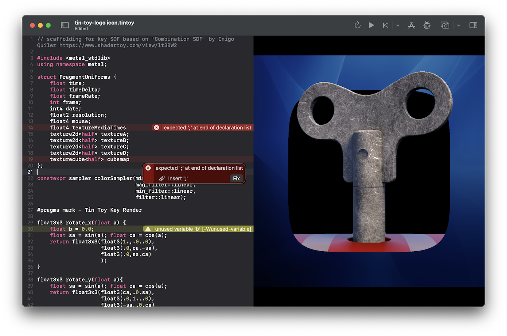
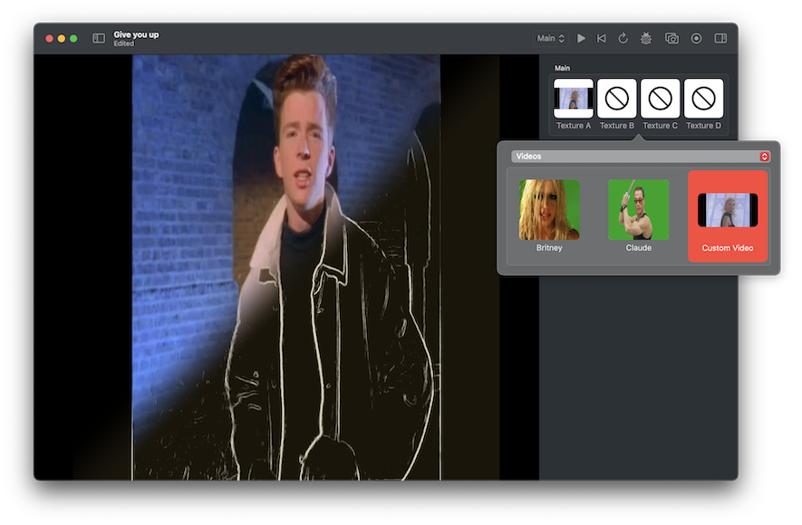
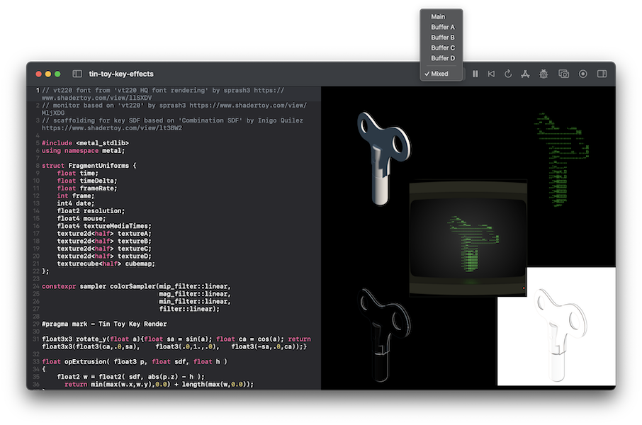
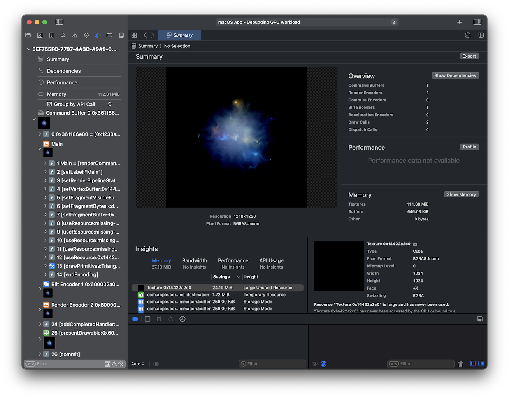
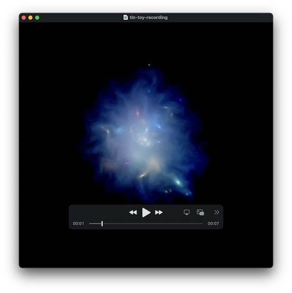

Based upon shadertoy.com, Tin Toy allows for the easy creation and experimentation of shaders using Apple Metal on macOS.
Edit your shaders and recompile manually or automatically. View errors and apply suggested fixes easily

Use custom images, videos, and the device's camera as a texture input

Select which stage of the render to view, or all at once to see exactly what is happening

You can capture a GPU trace for a frame to analysis using XCode's Metal debugger to understand exactly what your shaders are doing

Capture your shaders as images or video for use elsewhere
